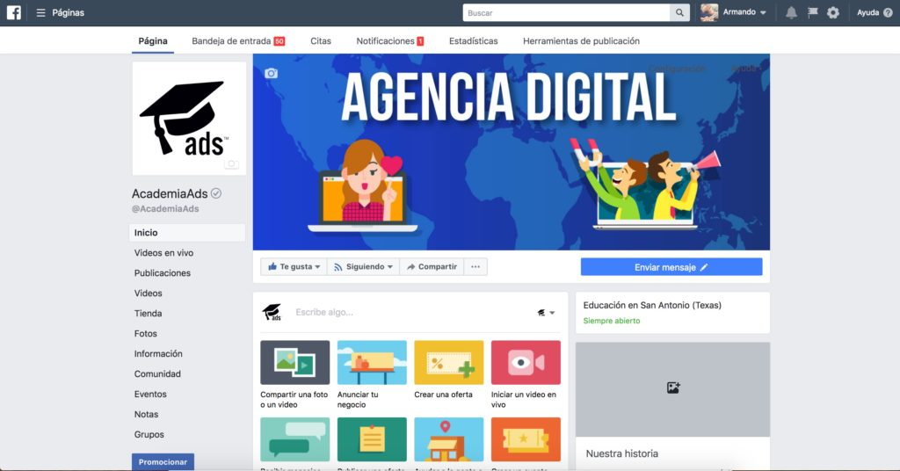
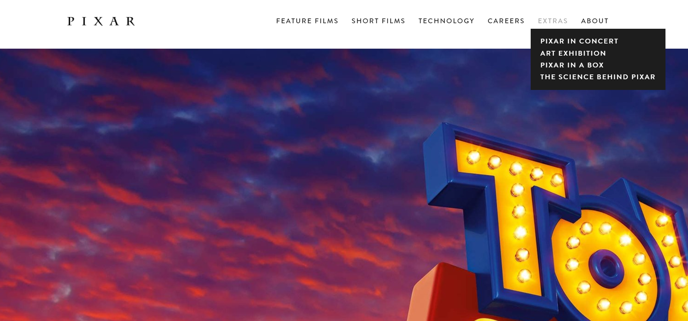

Hosting Company

Hosting Company

Este fue mi primer proyecto, lo hice con un pana que conocí en la uni, le decíamos Zucky, él y yo dijimos que necesitábamos conectar más gente entre ellas y bueno, así fue como nació Facebook, lo lanzamos en 2004. Igual fue bastante interesante el principio porque tuvimos que hacer grandes bases de datos, porque todos los universitarios querían entrar. Pero como la Big Data es lo mío, no tuvimos problema.
 Haz click aquí para ver la asombrosa página que creéSnapchat
Después de que me separé de Zucky en Facebook, quise desarrollar mi propia plataforma donde la interacción fuese más directa, así que empecé Snapchat únicamente como plataforma móvil. La lancé en 2011 y la tuve que desarrollar Java porque quería aprender ese lenguaje de programación. Por otro lado, la técnica comunicativa se basaba en algo instantáneo, que se borraba después de ser visto. La idea fue un éxito, pero cuando Zucky vio lo que hice, quiso él también agregarlo a su nueva aplicación, Instagram. En fin, me gustó mucho desarrollarlo.
 Descarga mi proyecto aquí
Descarga mi proyecto aquí
Proyecto Pixar
Después de que Zucky me fastidió un poco SnapChat, quise dedicarme al desarrollo web, donde fui contratado por Ed Catmull, fundador de Pixar para que le hiciera una página web. Al final se la hice al estilo Pixar, lo más creativo posible, mostrando mis dotes como artista, plasmé ahí la mejor página web que nunca se ha creado.
 Aquí verás la mejor página web jamás creadaMi nombre es Fernando Michel Baladi Tahan. Actualmente empecé a cursar el septimo trimestre de Ingeniería de Sistemas en la Universidad Metropolitana mi meta al corto plazo es graduarme, mientras que desarrollo cierta aplicaciones por mi cuenta, las cuales pienso que cambiarán al mundo.
Por otra parte, mi largo plazo lo veo ya con una empresa estable y creciendo, apostando indudablemente por mi país y mi gente.
Entre tantas cosas, me gustan los cubos rubik, tengo una colección variada de ellos, te generan una gran capacidad de hablar. Una de las cosas que más me motiva es la Pachamama, la madre naturaleza, cada vez que me encuentro un paisaje hermoso busco retratarlo e inspirarme de él. Otra cosa que me inspira es solucionar grandes problemas. Siento que al final del día se podrá llegar a mejorar exponencialmente cualquier situación.
Java
60/100
HTML
100/100
CSS
200/100
Inglés
75/100
Árabe
65/100
Habilidades sociales
80/100
Resolución de problemas
79/100
Solucionar cubos Rubik
100/100